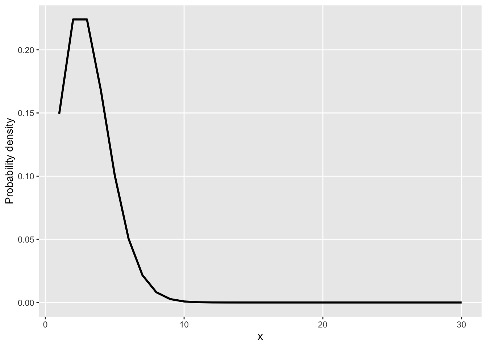
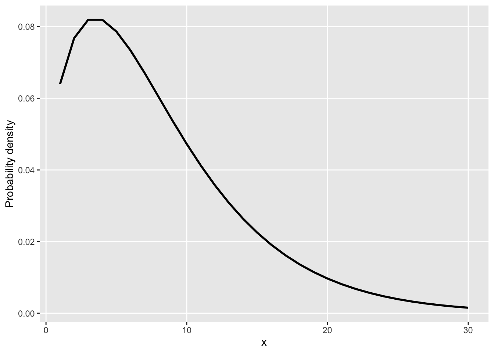
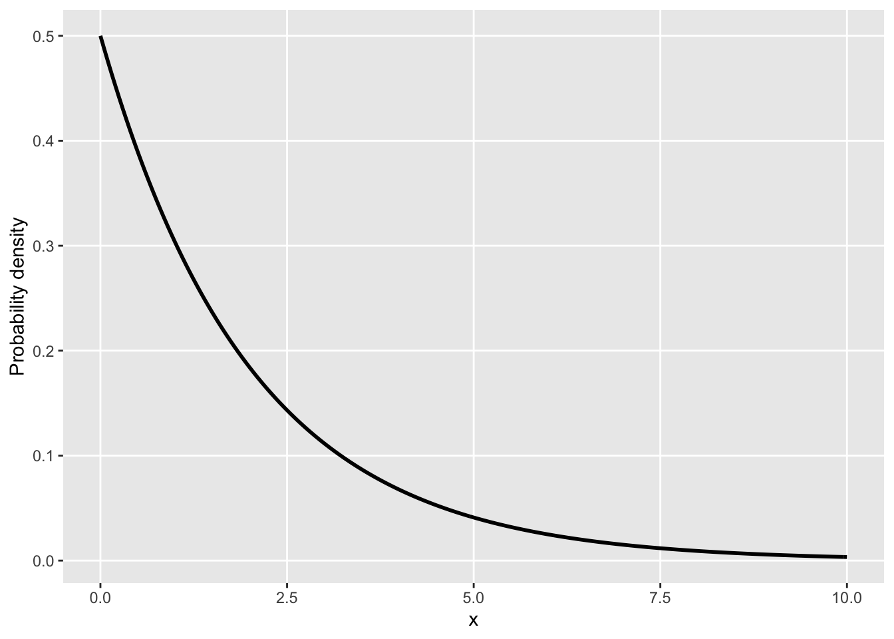
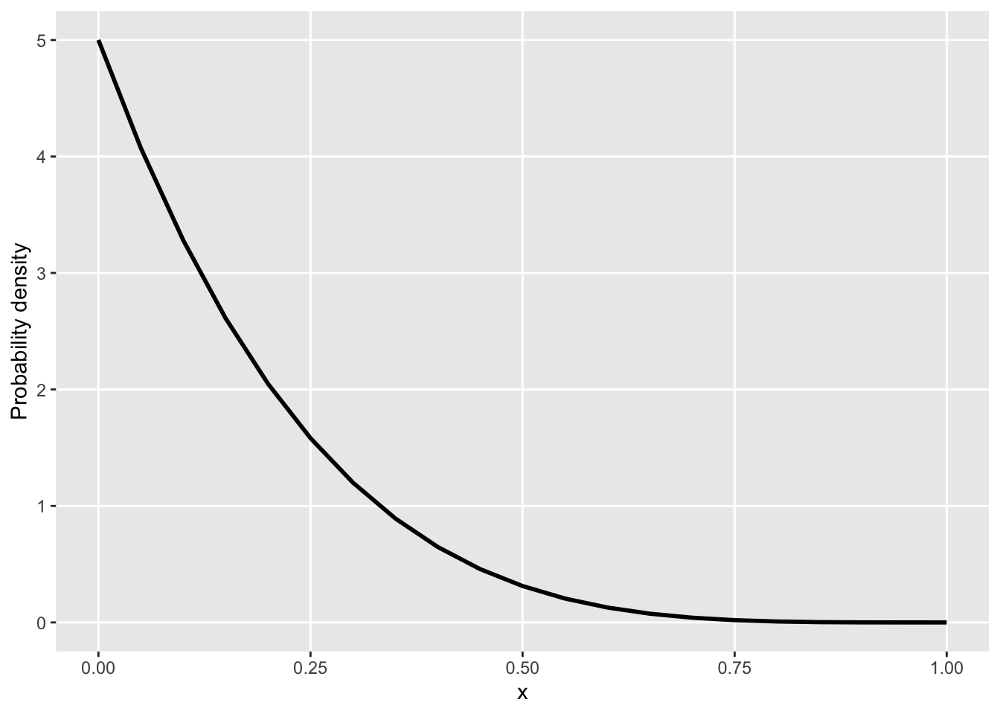

Chapter 3 When the normal distribution is inappropriate (generalised linear models)
While the normal distribution is very useful and even pops up in nature more often than one might expect, it is rarely the case that our variable of interest takes on this form specifically. Most of the time, are response variable probably is better measured by another probability density function. We are going to take a look at some main ones here.
3.1 Poisson
A common case encountered by psychologists and social science researchers is when the outcome variable is a non-zero integer, or a ‘count’. For example, you may wish to understand the relationship at the postcode level between socioeconomic variables (e.g. average household income) and the number of residents who receive a clinical diagnosis of depression. The equation for this would look the same as the linear regression examples provided earlier in the book, however, we have one small problem:
We cannot have decimals of a person. This makes a probability density function inappropriate to understand count data. Further, if we ran a linear regression on this data, the output would be continuous with decimals which would render any predictions we wish to make about the number of persons with depression inaccurate. Extrapolating the linear regression would also yield negative values, which does not make sense.
Instead, while the formula remains the same, we turn to a type of distribution that instead uses a probability mass function which is designed to work with count data. This distribution is known as the Poisson distribution. Whereas the normal distribution is parameterised by its mean and standard deviation, the Poisson distribution is specified by one parameter - lambda - which assumes that mean and variance are equal. The formula for a Poisson distribution is:
\(P(X=x) = \frac{\lambda^{x}e^{-\lambda}}{x!}\)
We can sample from a Poisson distribution in R (using a random lambda of 3) quite easily:
pois_data <- data.frame(x = seq(from = 1, to = 30, by = 1)) %>%
mutate(y = dpois(x, lambda = 3)) # Probability densities for the generated x variable values
# Make a plot
pois_data %>%
ggplot(aes(x = x, y = y)) +
geom_line(size = 1) +
labs(x = "x",
y = "Probability density") +
scale_x_continuous(limits = c(1,30)) +
theme(panel.grid.minor = element_blank())
3.2 Negative binomial
While Poisson distributions are immensely useful, it is not always the case that the mean of our data is equivalent to the variance. Luckily, there is a non-negative integer probability distribution for when this is the case - the negative binomial. The negative binomial generalises the Poisson distribution to when mean and variance are not the same. This makes them useful for many problems in the social sciences. We can simulate a negative binomial distribution and have a look at it. The negative binomial distribution can be written as:
\(f(k;r,p) = \frac{\Gamma(r+k)}{k!\Gamma(r)}p^{k}(1-p)^{r}\)
We can sample from a negative binomial distribution in R:
nb_data <- data.frame(x = seq(from = 1, to = 30, by = 1)) %>%
mutate(y = dnbinom(x, size = 2, prob = 0.2)) # Probability densities for the generated x variable values
# Make a plot
nb_data %>%
ggplot(aes(x = x, y = y)) +
geom_line(size = 1) +
labs(x = "x",
y = "Probability density") +
scale_x_continuous(limits = c(1,30)) +
theme(panel.grid.minor = element_blank())
3.3 Gamma
Gamma distributions are another class of probability density function that have very high utility. Gamma values must be positive real numbers. Gamma distributions are typically specified in one of three ways:
- With a shape parameter k and a scale parameter theta
- With a shape parameter alpha = k and an inverse scale parameter beta = 1/theta (known as rate)
- With a shape parameter k and a mean parameter mu = ktheta = alpha/beta
The gamma distribution can be written as (in the shape-scale format):
\(f(x;k,\theta) = \frac{x^{k-1}e^{-\frac{x}{\theta}}}{\theta^{k}\Gamma(k)}\)
We can sample from a gamma distribution in R:
gamma_data <- data.frame(x = seq(from = 0, to = 10, by = 0.05)) %>%
mutate(y = dgamma(x, shape = 1, scale = 2)) # Probability densities for the generated x variable values
# Make a plot
gamma_data %>%
ggplot(aes(x = x, y = y)) +
geom_line(size = 1) +
labs(x = "x",
y = "Probability density") +
scale_x_continuous(limits = c(0,10)) +
theme(panel.grid.minor = element_blank())
3.4 Beta
Beta distributions are unique and useful - they are specifically designed for response variables that range between 0 and 1. For example, your response variable might be the proportion of people in a given region who have a postgraduate degree. The normal distribution (and by extension standard linear regression) is inappropriate here, as extrapolation would clearly lead to values that exceed 0 in the negative direction, and 1 in the positive direction. This would limit any predictive capability outside the immediate sample. The beta distribution can be written as:
\(f(x;\alpha,\beta) = \frac{x^{\alpha-1}(1-x)^{\beta-1}}{\frac{\Gamma(\alpha)\Gamma(\beta)}{\Gamma(\alpha+\beta)}}\)
We can sample from a beta distribution in R:
beta_data <- data.frame(x = seq(from = 0, to = 1, by = 0.05)) %>%
mutate(y = dbeta(x,1,5)) # Probability densities for the generated x variable values
# Make a plot
beta_data %>%
ggplot(aes(x = x, y = y)) +
geom_line(size = 1) +
labs(x = "x",
y = "Probability density") +
scale_x_continuous(limits = c(0,1)) +
theme(panel.grid.minor = element_blank())